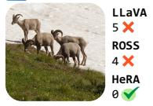

Mind the Heads：HeRA 用 MKNN 局部邻域结构作为 topological alignment 目标，选择最不对齐的 attention heads 做对比式正则
把外部视觉 encoder 对齐信号细化到 MLLM 内部 head 级结构，避免只对齐固定层。
Mind the Heads: Topological Representation Alignment for Multimodal LLMs Davide Caffagni, Alberto Compagnoni, Federico Melis, Sara Sarto, Pier Luigi Dovesi, Mark Granroth-Wilding, Marcella Cornia, Lorenzo Baraldi arXiv 新增 / VLM 表征对齐 原文链接
Figureure 2 · : Overview of HeRAFigure 2: Overview of HeRA. Alongside the standard language modeling objective $( \mathcal { L } _ { \mathrm { L M } } )$ , HeRA employs a contrastive loss $( \mathcal { L } _ { \mathrm { H e R A } } )$ to pull representations from selected LLM attention heads closer to their k-nearest neighbors (Top-k), computed in the latent space of a frozen teacher vision encoder.这张图概括 Mind the Heads 的整体方法流程。阅读时先看模块之间传递的训练信号，再看作者如何把目标拆成可优化的子问题。

Figureure 10 · : Qualitative comparison of LLaVA [19], ROSS [38], and HeRA using QwenFigure 10: Qualitative comparison of LLaVA [19], ROSS [38], and HeRA using Qwen3-8B and SigLIP2. We present representative samples across all Cambrian categories: General, Knowledge, OCR, and Vision-Centric.这张图/表用于判断 Mind the Heads 的实验收益来自哪里。重点看替换、消融或跨模型设置下趋势是否一致，而不是只看单个最高分。